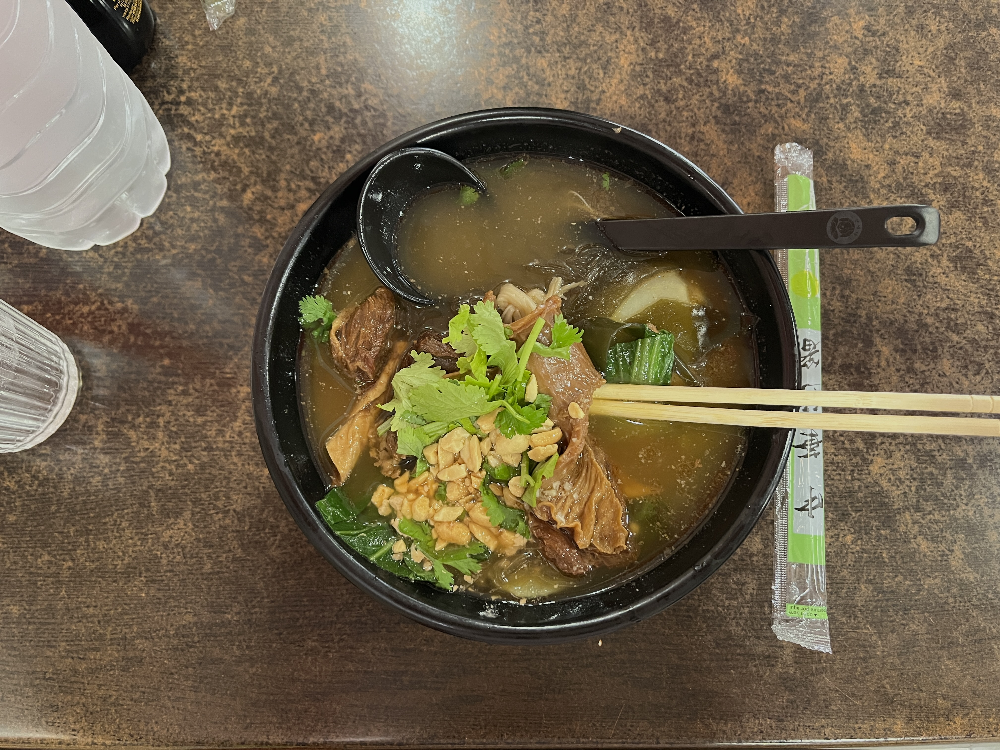
QUEDA OFICIALMENTE INAUGURADA LA SOUP SEASON, Y QUÉ MEJOR FORMA DE EMPEZARLA QUE CON EL RAMEN DE TERNERA COCIDA CON FIDEOS DE BATATA DE MI SITIO DE CONFIANZA XIONGZAI <3

QUEDA OFICIALMENTE INAUGURADA LA SOUP SEASON, Y QUÉ MEJOR FORMA DE EMPEZARLA QUE CON EL RAMEN DE TERNERA COCIDA CON FIDEOS DE BATATA DE MI SITIO DE CONFIANZA XIONGZAI <3
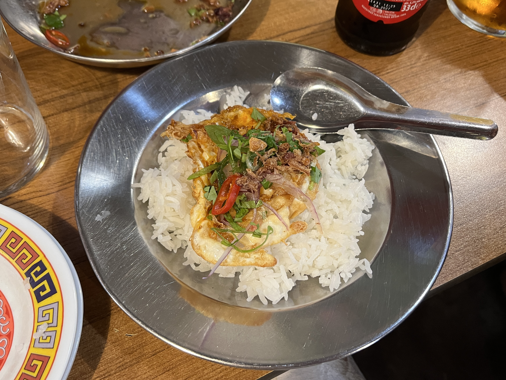
POCAS COSAS ME HACEN MÁS FELIZ QUE LOS YUM KAI DAO DE KITCHEN 154. ES QUE NO HAY PALABRAS.
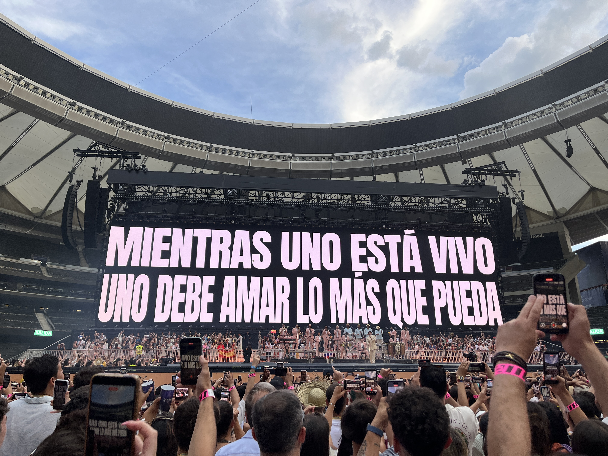
QUE OS VOY A DECIR YO DE ESTE CONCIERTO QUE NO SEPÁIS YA... BASTANTE CHARCA POR MI PARTE PERO PF QUE COSA MÁS EMOCIONANTE, TE HACE SENTIR CONSTANTEMENTE QUE FORMAS PARTE DE ALGO INMENSO. UN REGGAETÓN DE LUJO Y UN TRACKLIST NO SKIPS QUE TE HACE PENSAR A MITAD DE CONCIERTO QUE NO PUEDE IR A MEJOR Y AÚN ASÍ MEJORA. Y SOBRE LA FRASECITA DE LA FOTO, NO PUEDO ESTAR MÁS DE ACUERDO:) EL AMOR NOS HUMANIZA Y NOS DEVUELVE LO QUE LA RUTINA CAPITALISTA NOS QUITA CADA DÍA, ASI QUE MIENTRAS UNO ESTÉ VIVO UNO DEBE AMAR LO MÁS QUE PUEDA <3
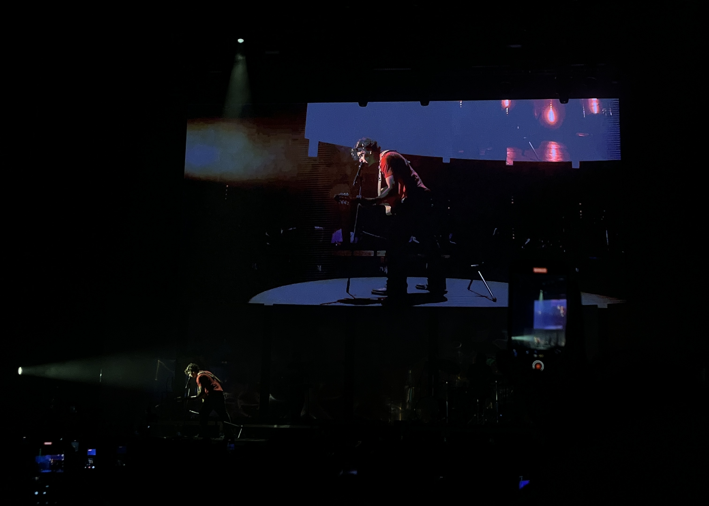
LA SEMANA PASADA ESTUVE EN EL WARM UP EN MURCIA (BEST PLACE EVER) Y BUENO, TUVE MIXED FEELINGS. ME ENCANTARON LOS SHOWS DE GUITARRICADELAFUENTE Y DE CARLOS ARES. DE GUITARRICA ME ENCANTÓ LA ILUMINACIÓN, LA REA, LA DIRECCIÓN MUSICAL, EL ACTING.. EN RESUMEN: TODO. DE CARLOS ARES LA DIRECCIÓN MUSICAL Y LA CONEXIÓN CON EL PÚBLICO. EN AKRILA ME LO PASÉ MUY BIEN, PERO AL FINAL ERA UN SHOW DE PISTA Y MICRO CON 100 FILTROS, Y EL RESTO DE SHOWS PASARON SIN PENA NI GLORIA. NO ME SORPRENDE PORQUE YA SABÍA EL CARTEL PERO VAYA ES FUERTE COMO CADA VEZ SIENTO QUE MÁS ARTISTAS QUIEREN PROYECTAR QUE TIENEN ALGO INTERESANTE QUE DECIR Y LUEGO NO SON CAPACES DE PRESENTAR NADA MINIMAMENTE COMPLEJO O DIFERENTE.
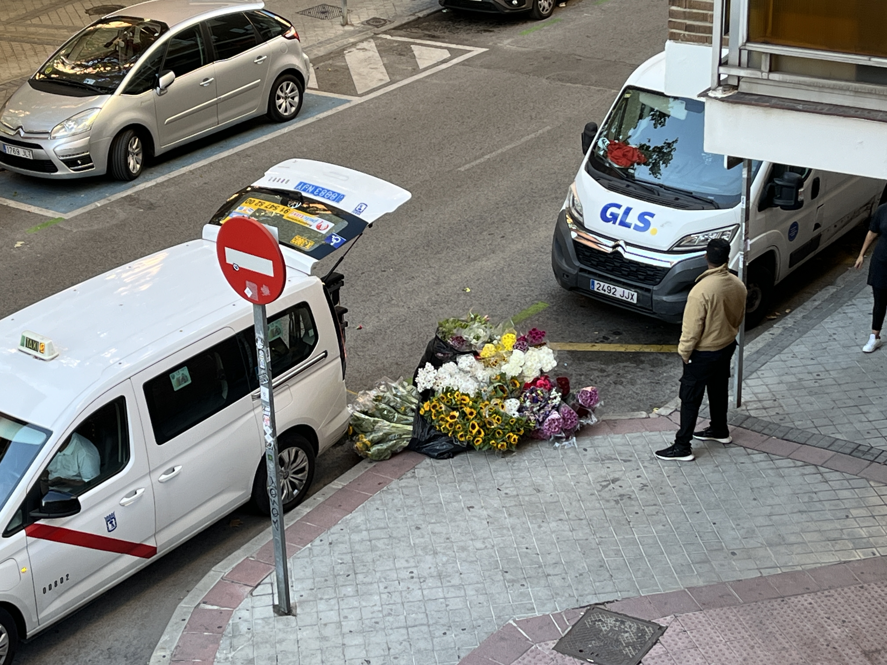
SE ACERCA EL DÍA DE TODOS LOS SANTOS Y MIENTRAS LA GENTE SE DEDICA A COMPRAR FLORES EN CANTIDADES INDUSTRIALES, YO ESTOY HABLANDO MUCHO DE LA MUERTE CON MI PADRE. DESDE QUE FALLECIÓ MI PRIMO NOSOTROS CONVIVIMOS CON LA IDEA DE LA MUERTE DE UNA FORMA MUY CERCANA Y RELAJADA. EL DESALIENTO QUE GENERA LA MUERTE DE UNA PERSONA JÓVEN NO TIENE CONSUELO, ASI QUE SIMPLEMENTE APRENDES A VIVIR CON ELLOY LLEGA UN MOMENTO EN QUE SE TRANSFORMA EN UNA ACTITUD VALIENTE Y CASI KAMIKAZE. NOSOTROS VIVIMOS CON LA IDEA DE QUE MAÑANA MISMO TODO SE PUEDE IR A LA MIERDA MUY PRESENTE, Y CREO QUE NO HAY FORMA MÁS NATURAL Y SINCERA DE AFRONTAR LA VIDA QUE ESA. CUALQUIER MIEDO CON EL QUE VIVAS SOLO TE VA A PARALIZAR, Y CON EL TIEMPO TE DARÁS CUENTA DE QUE EL TIEMPO HA PASADO IGUALMENTE Y POR CULPA DE ESE MIEDO NO HAS SIDO DUEÑO DE TU VIDA.
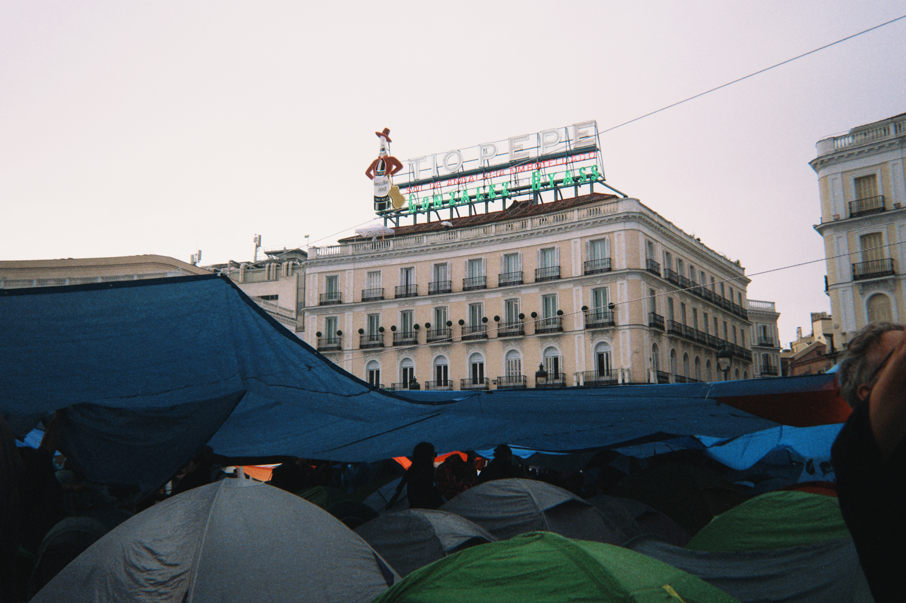
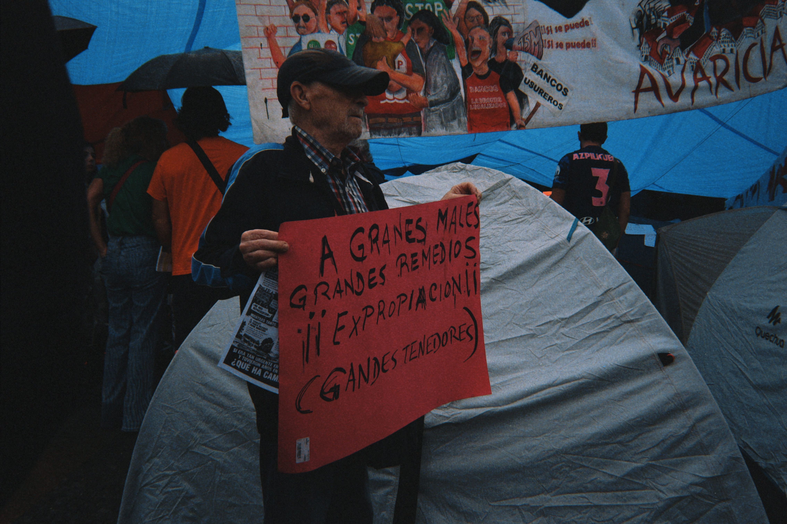
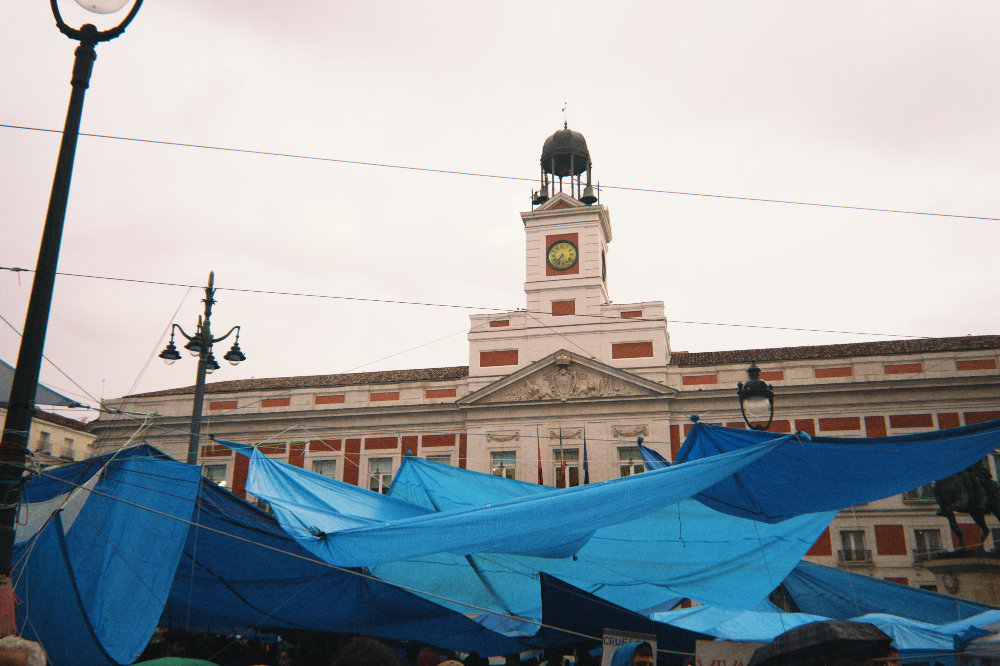

LA ACAMPADA POR EL DERECHO A LA VIVIENDA ES UN MOVIMIENTO SOCIAL QUE ME HA REMOVIDO MUCHO PORQUE ESTABA EMPEZANDO A PERDER LA ESPERANZA DE QUE EN ESTE PAÍS QUEDASE ESPÍRITU REIVINDICATIVO. DIRÍA QUE MADRID DA MIEDO, PERO ES QUE ESTO NO ESTÁ SUCEDIENDO SOLO EN MADRID, TODA ESPAÑA ESTÁ COLAPSADA PORQUE NO HAY CAPACIDAD DE PENSAMIENTO A FUTURO. ESTAS SON LAS FOTOS QUE HICE A DÍA 28 DE SEPTIEMBRE DE LA ACAMPADA. [UPDATE: A DÍA 30 DE OCTUBRE LA ACAMPADA SIGUE EN PIE A ESPERA DE LA HUELGA GEENRAL CONVOCADA PARA EL 11 DE NOVIEMBRE]
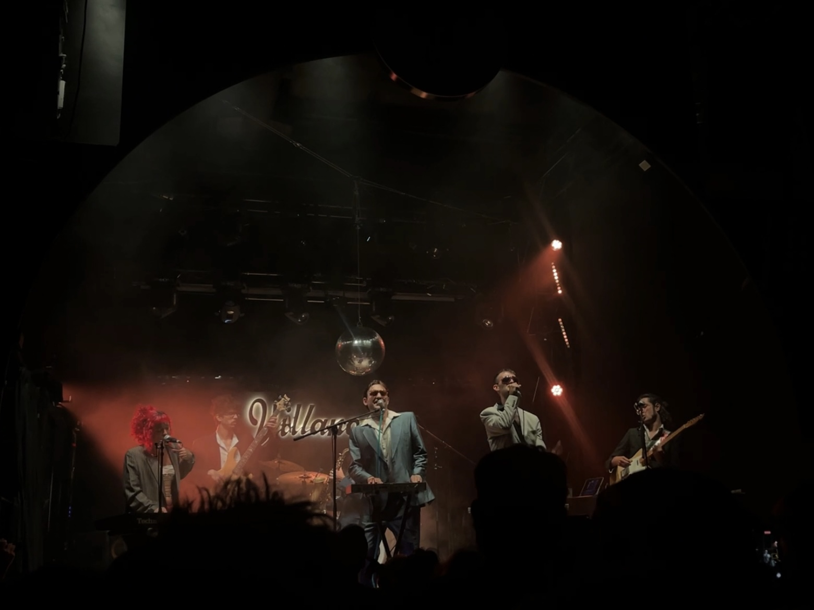
EL OTRO DÍA ESTUVE EN UNO DE MIS CONCIERTOS FAVORITOS DE LO QUE LLEVAMOS DE 2025. STEREO MADNESS ES UN GRUPO DE DISCO COSMIC-FUNK QUE MOLA MUUUUUUUUUCHO. EL CONTRASTE DE LA MÚSICA Y LAS LETRAS HACE QUE EL RANGO DE EDAD Y ESTILO DE PÚBLICO SEA MUY AMPLIO PERO A LA VEZ ESTÉ MUY COMPROMETIDO SON LA MOVIDA, COSA QUE TE LO DA TODO EN UN CONCIERTO. EN RESUMEN: MÚSICA BIEN HECHA Y CON GANAS. MIS FAVORITAS FUERON BOTINES BLANCO Y ÉCHALE MÁS. RECOMMENDED.
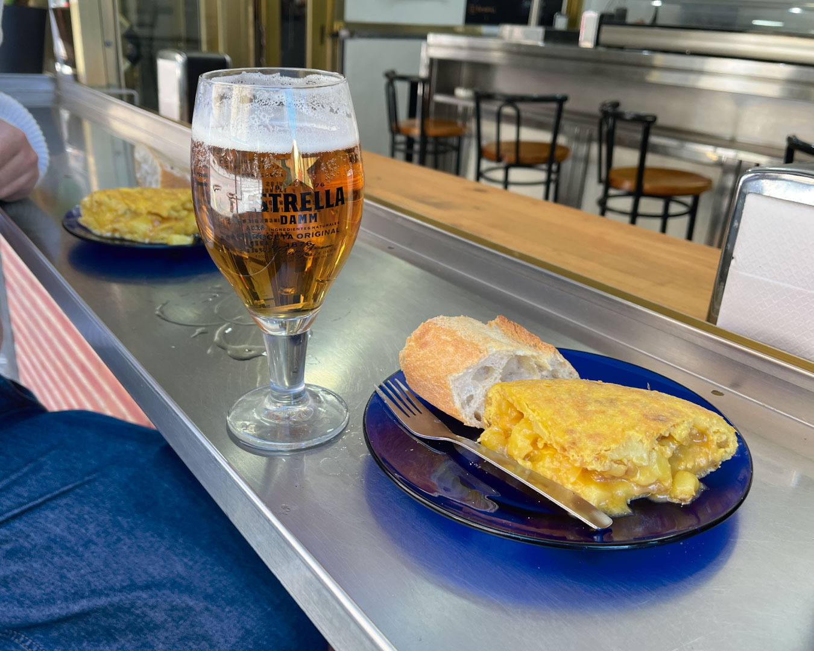
ESTE PINCHO DE TORTILLA.. CERCA DE LA PERFECCIÓN, POCO HECHA Y CON UN SABOR INCRE. LA MODERNEZ SE LLAMA EL SITIO. UN BARCITO ENANO EN LA ZONA DE IMPERIAL ROLLO BAR DE BARRIO PERO MODERNO (PERO NO GENTRIFICADOR). RECOMMENDED.
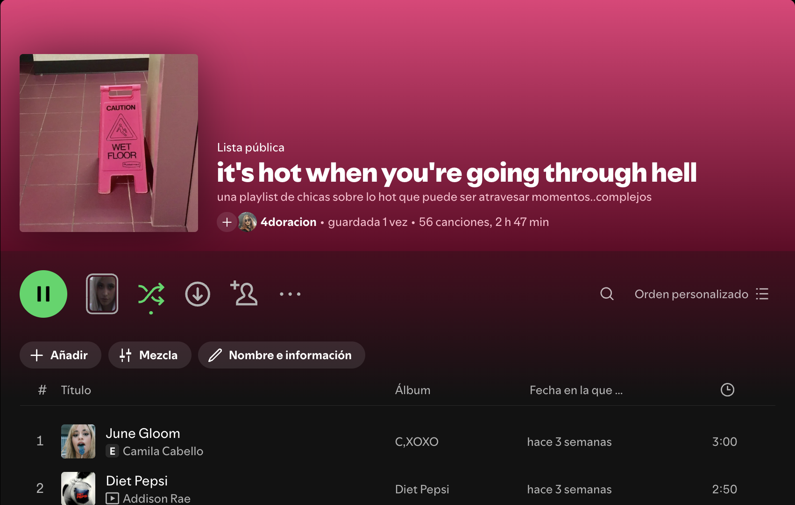
UNA NUEVA PLAYLIST TEMÁTICA SOBRE LO HOT QUE ES ESTAR ATRAVESANDO EL INFIERNO Y TODO CON CANCIONES DE CHICAS. ESCÚCHALA AQUÍ <3
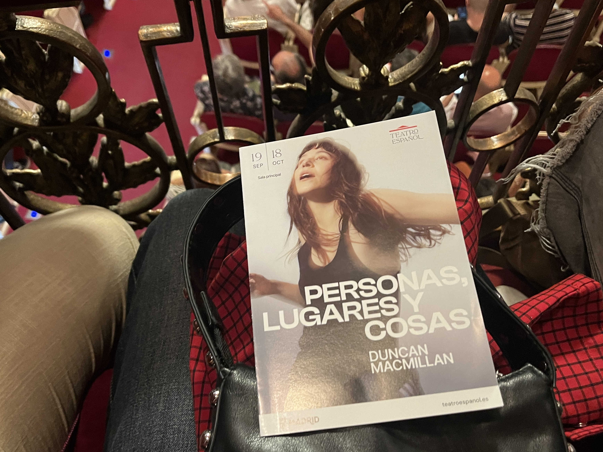
HACÍA MUCHO QUE NO IBA AL TEATRO Y QUÉ PENA HABER TARDADO TANTO. LUGARES, PERSONAS Y COSAS ME HA ENCANTADO PORQUE NO ES NADA DRAMÁTICA NI MORALISTA, SIMPLEMENTE TE CUENTA LA VIDA TAL Y COMO ES, TAL Y COMO HAY QUE ENFRENTARLA. NO PRETENDE MOSTRARTE UNA IDEA CERRADA SOBRE EL CONSUMO NI SOBRE COMO LIDIAR CON ÉL.
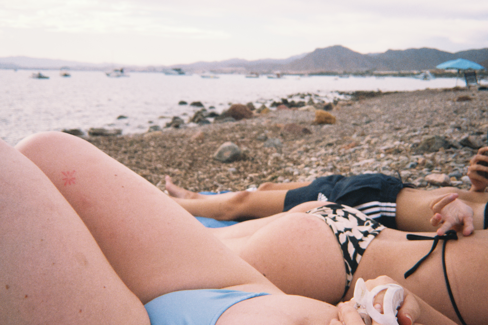
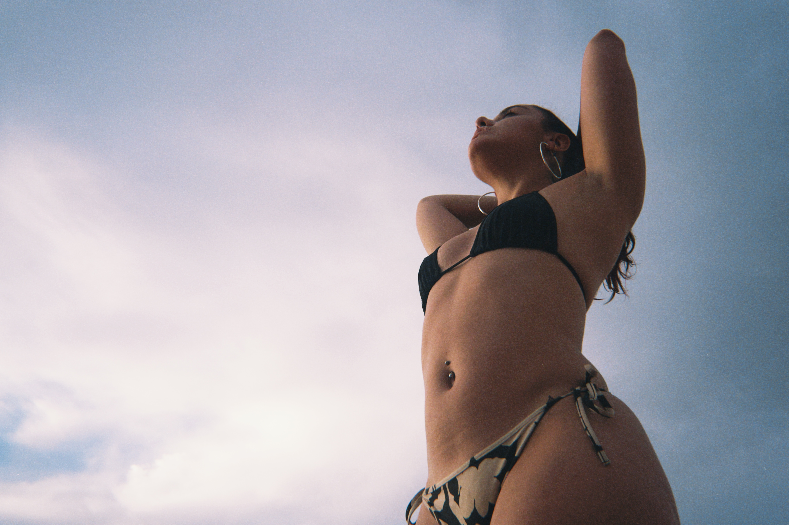
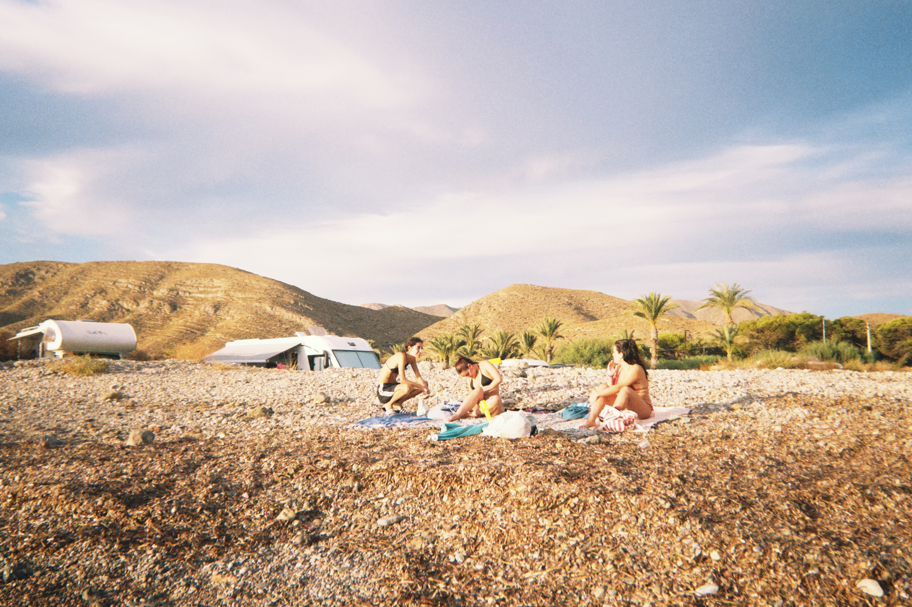
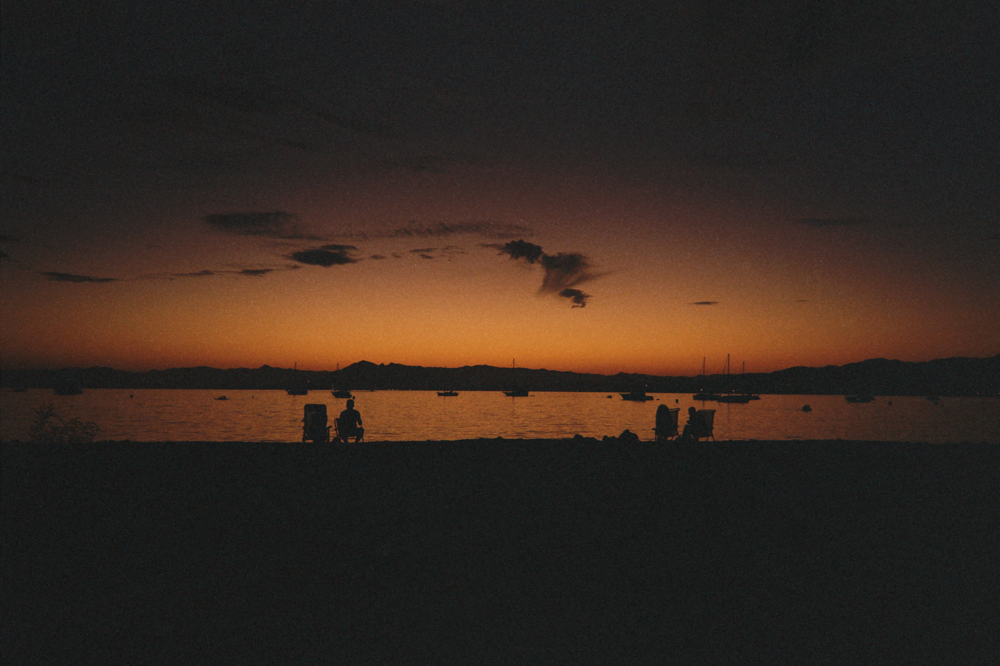
HE ESTADO HACIENDO FOTOS ESTE VERANO, SOBRETODO A MIS AMIGAS Y ESTOY MUY CONTENTA CON ALGUNAS. ME ESTÁ HACIENDO MUCHA ILUSIÓN SER LA QUE DISPARA PORQUE HABÍA PERDIDO EL HÁBITO.
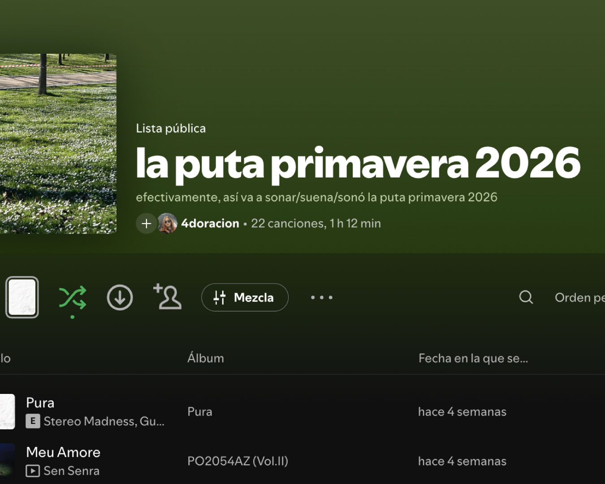
MI PRECIADA PLAYLIST DE LA PRIMAVERA26. OBVIAMENTE SOY UNA LOCA DE LAS PLAYLISTS, Y PARA MI FUNCIONAN MÁS COMO CÁPSULAS DEL TIEMPO QUE COMO MOOD SETTERS. SEGUIDME EN SPOTIFY @4doracion PORQUE LA VERDAD QUE MOLAN :)

EL OTRO DÍA LEÍ UN POST DE REDDIT SOBRE LA TEORÍA DEL CARRITO DE LA COMPRA, CÓMO ES OBJETIVAMENTE CORRECTO DEVOLVER EL CARRO Y COMO LÓGICAMENTE SOLO CONTEMPLAS NO HACERLO EN SITUACIONES DE EMERGENCIA. PERO A LA VEZ QUE ESTÁ ESTA PERCEPCIÓN EN REALIDAD NADIE TE PUEDE OBLIGAR A DEVOLVER EL CARRO, Y ASÍ SE CONVIERTE EN EL MAYOR TEST DE SI UNA PERSONA HARÍA LO QUE ESTÁ BIEN SIMPLEMENTE PORQUE ES LO CORRRECTO. ME PARECE DIVERTIDO PENSAR QUE TU CONDUCTA CON EL CARRO DE LA COMPRA SAQUE A RELUCIR SI ERES UN SALVAJE QUE NECESITA CASTIGO Y AMENAZA PARA HACER LAS COSAS BIEN. A LO MEJOR A PARTIR DE AHORA EMPIEZO A NO DEVOLVER EL CARRO